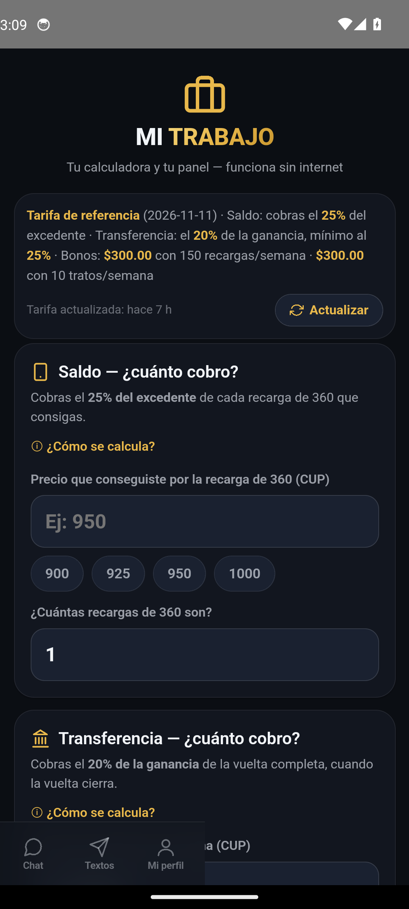
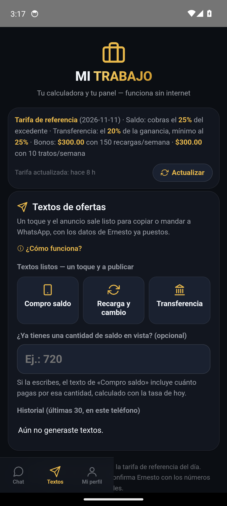
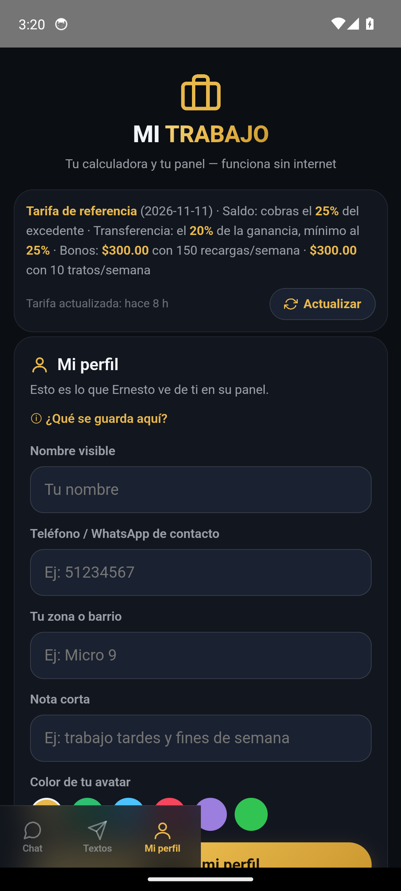
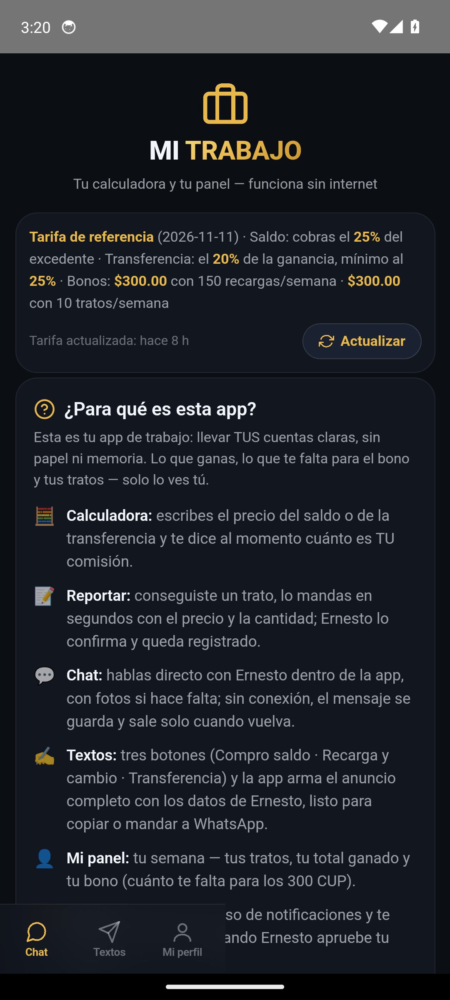
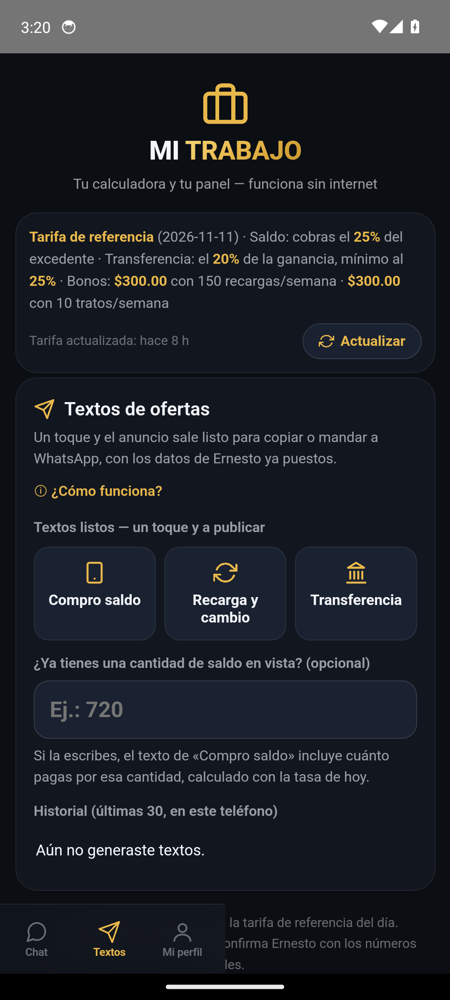
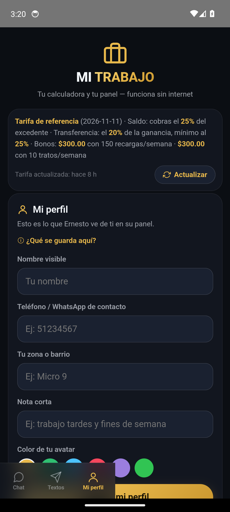
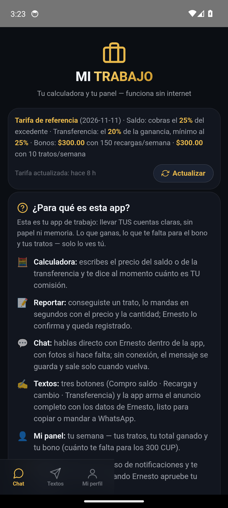

Ojo Android · Mi Trabajo #E8B84B
Recorrido automático en un teléfono Android virtual (Pixel · Android 14) con la APK exacta del release. #E8B84B (hora de Cuba).
PARCIAL
La app entró con la cuenta de prueba y no se cayó, pero 2 pestaña(s) no respondieron al toque en el teléfono virtual; sus fotos muestran la pantalla donde quedó el recorrido. El aviso de código inválido se vio en pantalla. El código de prueba quedó escrito en el campo antes de tocar Entrar. El diálogo de permiso de notificaciones apareció y se descartó antes de juzgar. Ni con densidad 320 se pobló el árbol: se volvió a la densidad normal pal tour. Recorrido interior hecho con 2 pestaña(s) sin responder. En «Mi panel» no se vio ningún botón «Editar» (¿la cuenta de prueba no tiene reportes editables?): ese botón queda sin probar en el emulador. El editor de foto nuevo NO se alcanzó en el emulador (selector o editor sin respuesta al robot): queda sin verificar aquí; su prueba es en un teléfono de verdad.









Esto es un teléfono virtual, no uno físico: sirve para cazar errores de arranque, diseño y navegación antes de entregar la APK. La prueba final — que el aviso llegue de verdad — sigue siendo en el teléfono de un buscador.